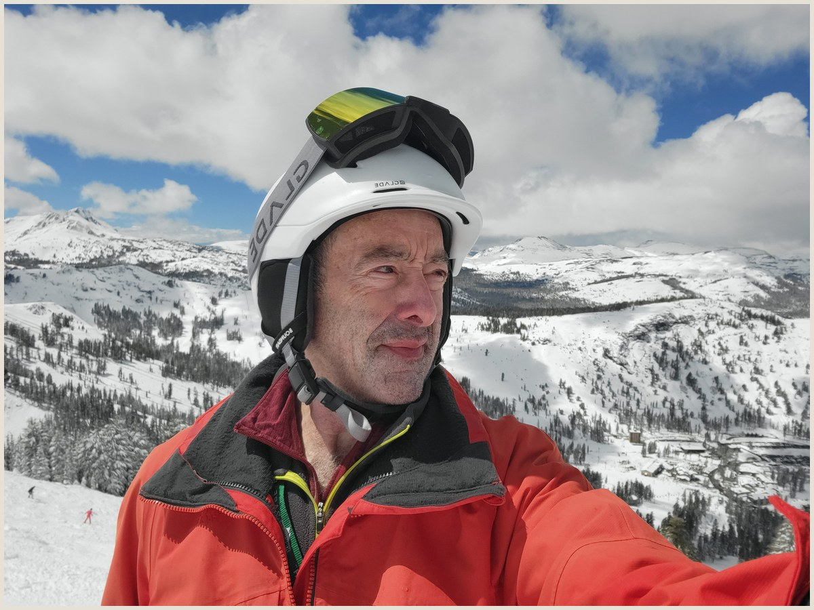
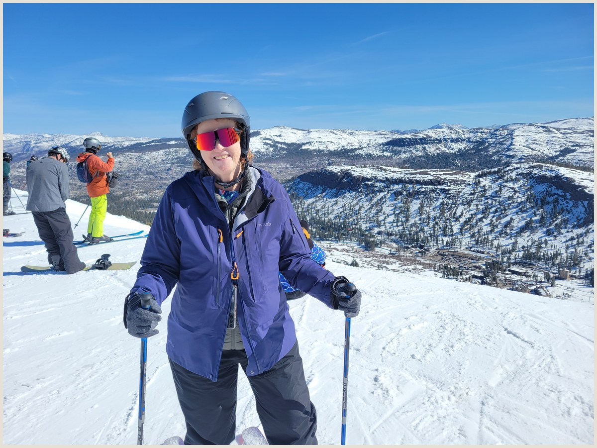

Sunday, April 12, 2026

Fresh powder blanketed the runs all morning as Colleen skied untracked snow through an active April storm, visibility dropping further by early afternoon.


Monday, April 13, 2026

A midday summit selfie at Kirkwood captured the resort village below and a pink-clad skier carving the slope behind — clear skies, cumulus clouds, classic Sierra spring conditions.

Saturday, April 18, 2026

Clear blue skies and firm spring snow greeted us as Colleen clicked in for a final day of laps on the expert terrain off Chair 6.